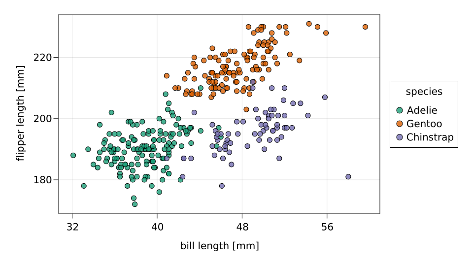

Introduction
Probabilistic predictive models
A probabilistic predictive model predicts a probability distribution over a set of targets for a given feature. By predicting a distribution, one can express the uncertainty in the prediction, which might be inherent to the prediction task (e.g., if the feature does not contain enough information to determine the target with absolute certainty) or caused by insufficient knowledge of the underlying relation between feature and target (e.g., if only a small number of observations of features and corresponding targets are available).[1]
The following plot shows measurements of the bill length and the flipper length for three different penguin species in the Palmer penguins dataset.

There exist many different probabilistic predictive models for predicting the probability of the penguin species (target) given the bill and flipper length (feature). We denote the feature by $X$ and the target by $Y$, and let $P_X$ be the prediction of a specific model $P$ for a feature $X$. Ideally, we would like that
\[P_X = \mathrm{law}(Y \,|\, X) \qquad \text{almost surely},\]
i.e., the model should predict the law of target $Y$ given features $X$.[2] Of course, usually it is not possible to achieve this in practice.
A very simple class of models are models that yield the same prediction for all features, i.e., they return the same probabilities for the penguin species regardless of the bill and flipper length. Clearly, more complicated take into account also the features and might output different predictions for different features.
In contrast to probabilistic predictive models, non-probabilistic predictive models predict a single target instead of a distribution over targets. In fact, such models can be viewed as a special class of probabilistic predictive models that output only Dirac distributions, i.e., that always predict 100% probability for one penguin species and 0% probability for all others.
Some other prediction models output a single target together with a confidence score between 0 and 1. Even these models can be reformulated as probabilistic predictive models, arguably in a slightly unconventional way: they correspond to a probabilistic model for a a binary classification problem whose feature space is extended with the predicted target and whose target is the predicted confidence score.
Calibration
The main motivation for using a probabilistic model is that it provides additional information about the uncertainty of the predictions, which is valuable for decision making. A classic example are weather forecasts that also report the "probability of rain" instead of only if it will rain or not.
Therefore it is not sufficient if the model predicts an arbitrary distribution. Instead the predictions should actualy express the involved uncertainties "correctly". One desired property is that the predictions are consistent: if the forecasts predict an 80% probability of rain for an infinite sequence of days, then ideally on 80% of the days it rains.
More generally, mathematically we would like
\[P_X = \mathrm{law}(Y \,|\, P_X) \quad \text{almost surely},\]
i.e., the predicted distribution of targets should be equal to the distribution of targets conditioned on the predicted distribution.[3]
This statistical property is called calibration. If it is satisfied, a model is calibrated.
Obviously, the ideal model $P_X = \mathrm{law}(Y \,|\, X)$ is calibrated. However, also the naive model $P_X = \mathrm{law}(Y)$ that always predicts the marginal distribution of $Y$ independent of the features is calibrated.[4] In fact, any model of the form
\[P_X = \mathrm{law}(Y \,|\, \phi(X)) \quad \text{almost surely},\]
where $\phi$ is some measurable function, is calibrated.
Calibration error
Calibration errors such as the expected calibration error and the kernel calibration error measure the calibration, or rather the degree of miscalibration, of probabilistic predictive models. They allow a more fine-tuned analysis of calibration and enable comparisons of calibration of different models. Intuitively, calibration measures quantify the deviation of $P_X$ and $\mathrm{law}(Y \,|\, P_X)$, i.e., the left and right hand side in the calibration definition.
Estimation
The calibration error of a model depends on the true conditional distribution of targets which is unknown in practice. Therefore calibration errors have to be estimated from a validation data set.
Various estimators of different calibration errors such as the expected calibration error and the kernel calibration error are implemented in CalibrationErrors.
CalibrationErrors.CalibrationErrorEstimator — Type(estimator::CalibrationErrorEstimator)(predictions, targets)Estimate the calibration error of a model from the set of predictions and corresponding targets using the estimator.
- 1It does not matter how the model is obtained. In particular, both Bayesian and frequentist approaches can be used.
- 2In classification problems, the law $\mathrm{law}(Y \,|\, X)$ can be identified with a vector in the probability simplex. Therefore often we just consider this equivalent formulation, both for the predictions $P_X$ and the law $\mathrm{law}(Y \,|\, X)$.
- 3The general formulation applies not only to classification but to any prediction task with arbitrary target spaces, including regression.
- 4In meterology, this model is called the climatology.